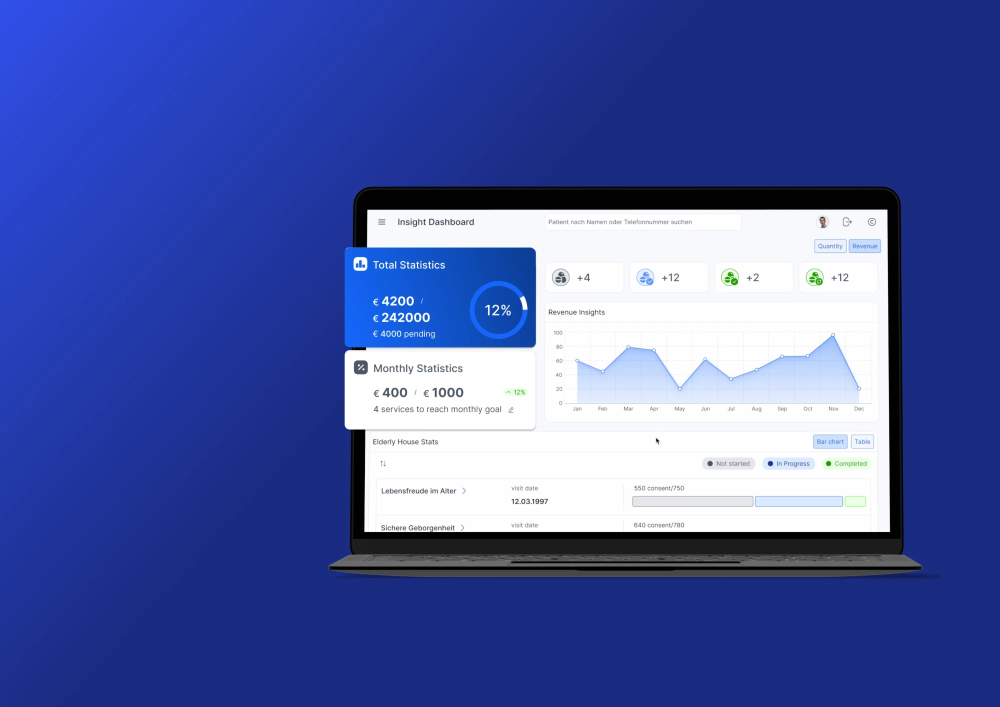
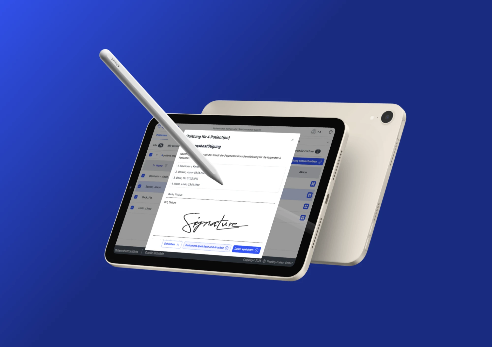
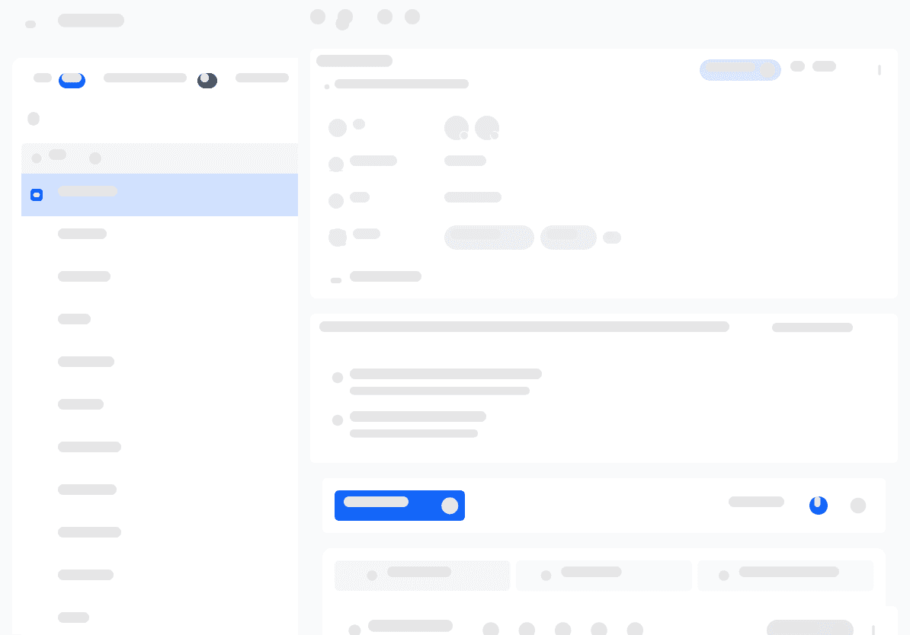
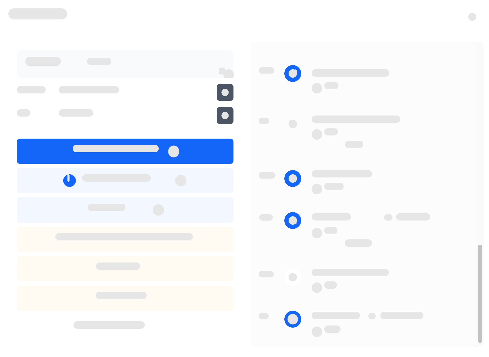
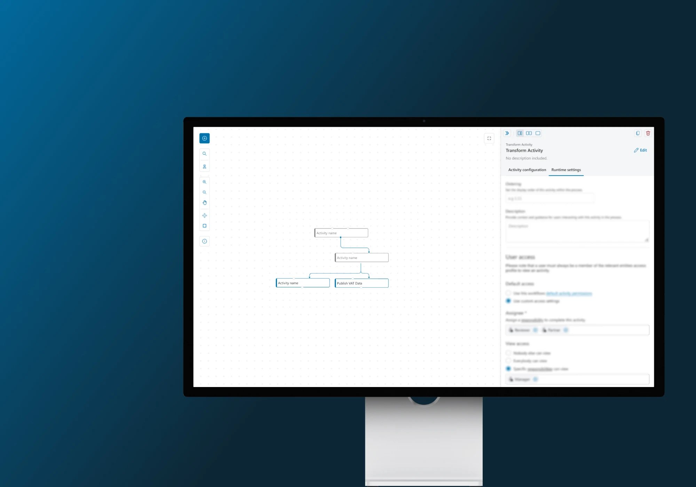
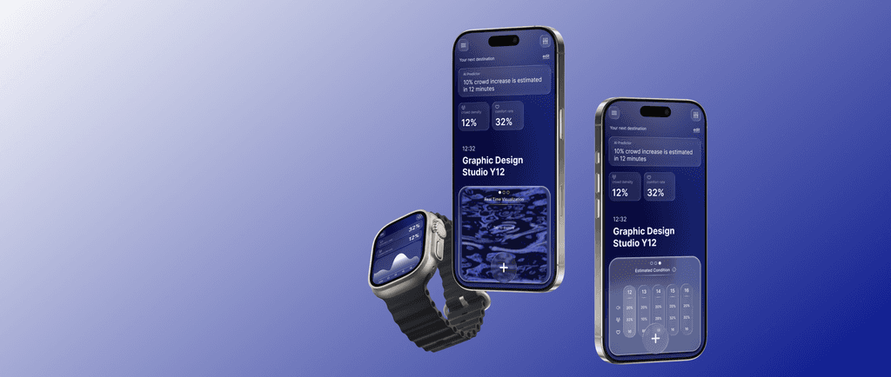
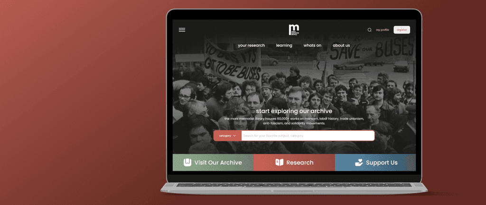

Thinking in systems, fascinated by design.
I create trust and reliability by design: usable, accessible, and easy to work with.
Selected work
Grouped by product: an overview first, then the case studies.


Apodienste
A platform pharmacies use to run patient services, from booking appointments to documentation and follow-up.
Case studies from Apodienste
-
One drawer, built from blocks
Pharmacy services redesigned as modules (appointments, documents, comments) held together by a guided service flow.
Read the case study
-
From comment thread to auditable patient record
Loose comments turned into trackable actions over three releases, designed in partnership with a fellow designer.
Read the case study

ARKK platform
An enterprise data platform that helps tax and finance teams in the office of the CFO automate compliance work. Workflows are built on a visual canvas by ARKK’s implementation teams, with the aim of handing that building over to clients and AI agents.
Case studies from ARKK platform

University projects
-
Turning ambient data into emotional predictability
A sensory data platform that helps people with social anxiety feel emotionally prepared before entering public spaces — transforming real-time ambient data into calming visual previews.
Read
-
Redesigning a historical archive for the digital age
A full UX redesign of the Marx Memorial Library website — improving navigation, accessibility and content discovery for a historical archive serving researchers and the public.
Read
Also in brief
Design systems
Built the Apodienste design system and led its tokenisation after a brand update. Now own the design system at ARKK alongside engineering.
AI in the workflow
Created plugins and skills for internal design tasks such as documentation, and have shipped code to production using Claude and MCP.
About me
How I work-
Research over assumptions
I test early with real users and let findings shape the direction, not the other way round.
-
Systems before screens
I look for the reusable structure underneath a problem, such as a drawer that fits any activity, so the product scales.
-
Good defaults over polish
In regulated work, the sensible default matters more than the decoration. I design for the day-to-day.
-
Close to engineering
I work cross-functionally, own design system decisions with engineers, and use AI to speed up the routine parts.
Contact
Open to product design roles and freelance work.
Based in the United Kingdom.